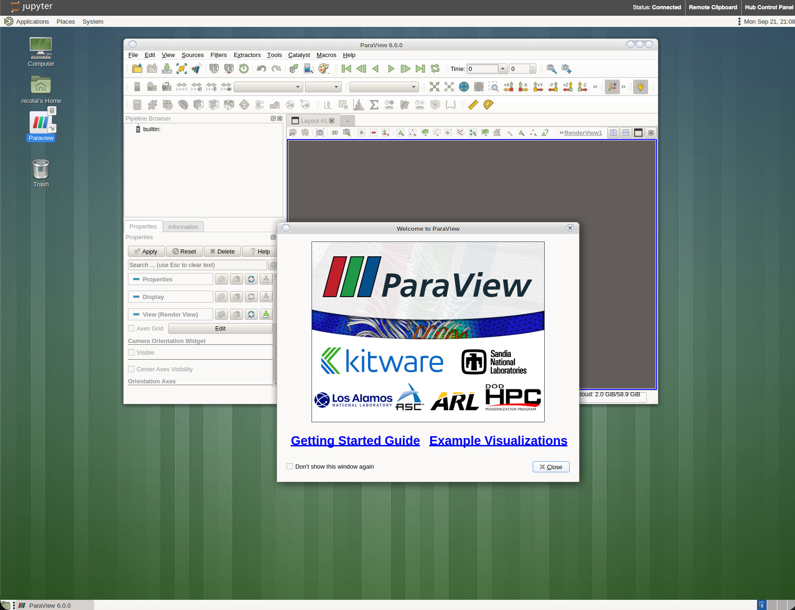

OpenFOAM How-To: your first RANS case
Flow over a backward-facing step with simpleFoam (pitzDaily)
Time to run a real CFD code. You will set up and run a steady, turbulent RANS simulation of flow over a backward-facing step (the classic pitzDaily case) with OpenFOAM’s simpleFoam solver, and look at the result in ParaView. The goal is to see how the finite-volume method from the lectures becomes a set of text files you control: the mesh, the boundary conditions, the schemes, the pressure–velocity coupling and the turbulence model. This is a self-guided walk-through — the self-tests along the way let you check your understanding; nothing here is handed in.
This how-to is all about reading and editing plain-text files from a shell. If the command line is new to you, skim the Terminal and vim page first — it covers opening a terminal, moving around, viewing files, and the few vim commands you use throughout this how-to.
1 The finite-volume recipe, as files
Recall the finite-volume idea: integrate the conservation laws over each cell, turn volume integrals of fluxes into face fluxes with Gauss’s theorem, choose a rule to reconstruct the face values, and couple pressure and velocity so the flow stays divergence-free. In OpenFOAM every one of those choices is a line in a dictionary file:
| Lecture concept | OpenFOAM file |
|---|---|
| the mesh (control volumes) | system/blockMeshDict → constant/polyMesh |
| boundary & initial conditions | the 0/ directory (U, p, k, epsilon, nut) |
| face-flux interpolation (upwind / central) | system/fvSchemes (divSchemes) |
| pressure–velocity coupling (SIMPLE) | system/fvSolution (SIMPLE, solvers) |
| iteration control & outputs | system/controlDict |
| turbulence model (\(k\)–\(\varepsilon\)) | constant/turbulenceProperties |
2 Get the case on the cluster
Load the module and copy the tutorial case into your scratch space:
module load openfoam/v2412 # ESI OpenFOAM, sets FOAM_TUTORIALS etc.
cd /scratch/$USER
cp -r $FOAM_TUTORIALS/incompressible/simpleFoam/pitzDaily .
cd pitzDaily
lsAt any point you can open the case in ParaView to see the mesh, the boundary patches and the results. On the cluster ParaView is a graphical program, so it can only be opened from a remote desktop launched inside JupyterLab — not from the login-node shell. In the JupyterLab Launcher, open the Desktop (VNC) tile; in the desktop that appears, double-click the Paraview icon to start ParaView (Fig. 1). Load a case with File → Open and choose its .foam file; if the case has none yet, create an empty marker file in the case folder first (this needs no graphics, so a plain terminal is fine):
touch case.foam # an empty <name>.foam file tells ParaView which case to read
.foam file with File → Open. opening it from a terminal does not work here — there is no X-forwarding.
Do this whenever you are unsure what a file did — visual feedback is the fastest way to learn OpenFOAM. For a full tour — fields, slices, glyphs, streamlines and profile plots on this same pitzDaily case — see the ParaView tutorial.
This case is small enough to run directly on the login node. Larger runs must go through the Slurm scheduler on a compute node; we introduce that in the next tutorial.
3 The case files
Inspect any dictionary with cat. Do this once now, and use the same command for every file below:
cat constant/turbulencePropertiesconstant/turbulenceProperties
simulationType RAS; // Reynolds-Averaged Simulation (RANS): solve the mean flow
RAS
{
RASModel kEpsilon; // the model from Assignment 2
turbulence on;
printCoeffs on; // echoes C_mu, C_eps1, ... to the log
}3.1 system/fvSchemes — where the face flux is chosen
The divSchemes block is the interpolation-scheme decision from the lectures (upwind vs. central; numerical diffusion vs. oscillations). The v2412 pitzDaily block:
system/fvSchemes (divSchemes)
divSchemes
{
default none;
div(phi,U) bounded Gauss linearUpwind grad(U); // momentum: 2nd order
turbulence bounded Gauss limitedLinear 1; // define a reusable scheme, name it 'turbulence'
div(phi,k) $turbulence; // $turbulence = reuse the entry above (a macro)
div(phi,epsilon) $turbulence;
div((nuEff*dev2(T(grad(U))))) Gauss linear;
}bounded, and why limitedLinear on \(k\), \(\varepsilon\)?
bounded adds a term that vanishes at convergence but keeps a steady run stable while \(\nabla\!\cdot\mathbf U\) is not yet zero. The turbulence scalars use limitedLinear — a flux-limited (TVD) scheme: second-order where the field is smooth, but it clips the reconstruction near steep gradients so \(k\) and \(\varepsilon\) can never go negative. That bounded-but-accurate compromise is exactly the flux-limiter idea from the finite-volume lecture; momentum can use plain linearUpwind because \(\mathbf U\) need not stay positive.
3.2 system/fvSolution — the SIMPLE loop
system/fvSolution (SIMPLE)
SIMPLE
{
nNonOrthogonalCorrectors 0;
consistent yes;
residualControl { p 1e-4; U 1e-4; "(k|epsilon)" 1e-4; }
}
relaxationFactors
{
equations { U 0.9; "(k|epsilon)" 0.9; }
fields { p 0.3; } // pressure is under-relaxed the most
}simpleFoam solves the momentum predictor, then a pressure(-correction) Poisson equation, corrects, and repeats until the residuals fall below residualControl.
3.3 system/controlDict — iteration control and outputs
system/controlDict
application simpleFoam;
startTime 0;
endTime 2000; // steady: "time" = SIMPLE iteration number
deltaT 1;
writeInterval 100;OpenFOAM lets you attach function objects in controlDict to compute things while the solver runs — a very common way to add post-processing. The case already ships with a streamlines function object; add solverInfo in addition so the solver records, each iteration, the initial/final residual and iteration count of every field — the residual history you plot to judge convergence:
system/controlDict (functions)
functions
{
#includeFunc streamlines // already in the case
solverInfo // add this block: writes the residual history
{
type solverInfo;
libs (utilityFunctionObjects);
fields (p U k epsilon);
}
}The older residuals function object (and the #includeFunc residuals(...) shorthand) was removed in OpenFOAM v2412 — solverInfo is its replacement.
4 Mesh and boundary conditions
4.1 Build the mesh
blockMesh # reads system/blockMeshDict → constant/polyMesh
checkMesh # sanity-check: should end with "Mesh OK."Open the case in ParaView (its .foam file, via File → Open) and colour by patch to see the inlet, outlet and walls of the step.
4.2 Boundary conditions
The 0/ directory holds one file per field; each lists a boundaryField with a condition on every patch. Look at the velocity:
cat 0/U0/U (boundaryField)
boundaryField
{
inlet { type fixedValue; value uniform (10 0 0); } // 10 m/s in +x
outlet { type zeroGradient; } // let the flow leave freely
upperWall { type noSlip; } // solid wall: U = 0
lowerWall { type noSlip; }
frontAndBack { type empty; } // 2-D case: no z-direction
}p gets a fixed value at the outlet and zeroGradient on the walls; k, epsilon and nut use inlet values plus wall functions. Inspect them the same way (cat 0/p, cat 0/k, …).
5 Run the solver
simpleFoam | tee log.simpleFoam # runs, and also saves the screen output to a logEach SIMPLE iteration prints one block; read it like this:
Time = 280
smoothSolver: Solving for Ux, Initial residual = 0.000120005, Final residual = 1.17549e-05, No Iterations 5
smoothSolver: Solving for Uy, Initial residual = 0.00098843, Final residual = 6.83453e-05, No Iterations 6
GAMG: Solving for p, Initial residual = 0.000770708, Final residual = 6.66094e-05, No Iterations 5
time step continuity errors : sum local = 0.00317883, global = -0.000240337, cumulative = 1.06288
smoothSolver: Solving for epsilon, Initial residual = 0.000120694, Final residual = 7.02111e-06, No Iterations 3
smoothSolver: Solving for k, Initial residual = 0.000226192, Final residual = 1.4116e-05, No Iterations 4
ExecutionTime = 7.7 s ClockTime = 9 s
SIMPLE solution converged in 280 iterations
streamLine streamlines write:
seeded 10 particles
Tracks:10
Total samples:10885
End- Time — the SIMPLE iteration number (this is a steady run, so “time” is just the iteration counter).
- Initial residual — how far the field is from satisfying its equation at the start of this iteration. This is the number to watch: it should fall over the run. Convergence is declared when every initial residual drops below the
residualControlvalue (\(10^{-4}\)) — here after 280 iterations. - Final residual / No Iterations — how well the linear solver solved that one equation this iteration (much smaller, less interesting).
- continuity errors — how badly mass conservation is violated; the per-step
sum localandglobalvalues should stay small (thecumulativefigure just accumulates them and is not a convergence metric). - ExecutionTime / ClockTime — cumulative solver and wall-clock time; note these for the cost comparison across cases in Assignment 2b.
- streamLine … write / End — the
streamlinesfunction object writing its tracks as the run finishes;Endmarks a clean exit.
6 Post-processing
Start in ParaView (open the case’s .foam file as above). It is the quickest way to see the physics: colour by velocity magnitude to see the jet and the recirculation bubble behind the step, and turn on the streamlines output to see the flow reattach. The ParaView tutorial walks through fields, slices, glyphs, streamlines and profile plots on this case step by step.
For plots you can reproduce, pull the fields into Python instead:
import numpy as np, matplotlib.pyplot as plt
path = "postProcessing/solverInfo/0/solverInfo.dat"
# the last commented line holds the column names
with open(path) as fh:
names = [ln for ln in fh if ln.startswith("#")][-1].lstrip("#").split()
# solverInfo mixes text columns (the solver name) with numbers, so read ONLY
# the Time column and the "<field>_initial" residual columns
init = [j for j, n in enumerate(names) if n.endswith("_initial")]
d = np.loadtxt(path, comments="#", usecols=[0] + init)
t = d[:, 0] # first column is the iteration counter
for k, j in enumerate(init, start=1):
plt.semilogy(t, d[:, k], label=names[j][:-len("_initial")])
plt.xlabel("SIMPLE iteration"); plt.ylabel("initial residual"); plt.legend()7 Self-tests
Open system/fvSchemes. Which scheme is used for div(phi,U), and is it first- or second-order? What does that choice mean for numerical diffusion?
div(phi,U) uses linearUpwind grad(U) — a second-order upwind-biased scheme. It is far less diffusive than first-order upwind (which would smear the shear layer behind the step), while more stable than pure central differencing (which can oscillate at high cell Péclet number).
From system/fvSolution, which fields does the solver iterate, and what is the under-relaxation factor on pressure? Why is pressure under-relaxed the most?
It solves \(U\), \(p\), \(k\), \(\varepsilon\). Pressure is under-relaxed to \(0.3\) (vs. \(0.9\)). The pressure equation enforces incompressibility globally and reacts strongly to the not-yet-divergence-free velocity; heavy under-relaxation keeps the segregated SIMPLE loop from diverging.
From your residual plot, has the run converged? What is the final initial-residual level of the pressure equation?
Converged when all initial residuals fall below residualControl (\(10^{-4}\)) and level off; pressure is usually the last to get there. A monotone decrease over a few hundred iterations to \(\sim\!10^{-4}\) is the expected picture.
From the velocity field, the flow separates at the step and reattaches downstream. Estimate the reattachment length (step to where the near-wall flow changes direction), in step heights.
The recirculation bubble reattaches at roughly \(6\)–\(8\) step heights for this Reynolds number and model; the exact value depends on mesh and scheme — which is what Assignment 2b explores.
8 Further reading
- OpenFOAM tutorial guide — steady turbulent flow over a backward-facing step (the guide’s compressible variant of this case).